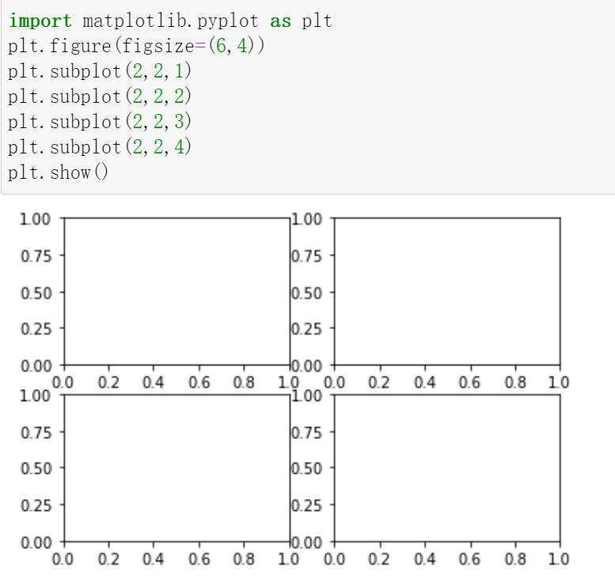

第 1 页 · 01
01
认识Matplotlib
第 2 页 · 11.1 认识Matplotlib
11.1 认识Matplotlib
Matplotlib 首次发表于2007年，由于在函数设计上参考了 MATLAB ，其名字以“Mat”开头，中间的“ plot ”表示绘图这一作用，而结尾的“ lib ”则表示库。近年来 Matplotlib 在开源社区的推动下，在科学计算领域得到了广泛的应用，成为了 Python 中应用非常广的绘图工具包之一。 Matplotlib 中应用最广的是 matplotlib.pyplot 模块。
matplotlib.pyplot （以下简称 pyplot ）是一个命令风格函数的集合，使 Matplotlib 的机制更像 MATLAB 。每个绘图函数都可对图形进行一些更改，如创建图形，在图形中创建绘图区域，在绘图区域绘制一些线条，使用标签装饰绘图等。
第 3 页 · 11.1.1 Matplotlib绘图步骤
11.1.1 Matplotlib绘图步骤
1.导入绘图库
在绘图之前，需要导入Matplotlib库中的pyplot模块，其一般格式如下：
import matplotlib.pyplot as plt
2.创建画布
创建画布的主要作用是构建一张空白的绘图窗口（figure），其一般格式如下：
plt.figure(figsize=(len,wid))
其中len表示画布的长度，wid表示画布的宽度。
3.创建子图
当只需要绘制一副简单的图形时，该步骤可以省略。
Matplotlib 中，整个图像为一个 Figure 对象。在 Figure对象中可以包含一个或者多个 子图。在绘图时，可以选择是否将整个绘图窗口划分为多个子图，方便在同一幅图上绘制多个子图。
利用 subplot 可以将当前绘图窗口（ figure ）划分为按行、列编号的多个矩形窗格，每一个矩形窗格都对应一个子图。在 Matplotlib 中，可以利用 plt.subplot 逐一创建子图，其一般方法为：
plt.subplot ( m , n , k ) ＃添加编号为 k 的子图

第 4 页 · 11.1.1 Matplotlib绘图步骤
11.1.1 Matplotlib绘图步骤
4.添加画布内容
添加画布内容是绘图的主体部分。其中添加标题、添加坐标轴名称、绘制图形等步骤是并列的，没有先后顺序，可以先绘制图形，也可以先添加各类标签。但是添加图例一定要在绘制图形之后。
| 函数 | 描述 |
| plt.title | 添加标题，可以指定标题的名称、位置、颜色、字体大小等参数 |
| plt.xlabel | 添加 x 轴名称，可以指定位置、颜色、字体大小等参数 |
| plt.ylabel | 添加 y 轴名称，可以指定位置、颜色、字体大小等参数 |
| plt.lengend | 指定图形的图例，可以指定图例的大小、位置、标签 |
| plt.xlim | 指定图形 x 轴的范围，只能确定一个数值区间，而无法使用字符串标识 |
| plt.ylim | 指定图形y 轴的范围，只能确定一个数值区间，而无法使用字符串标识 |
| plt.xticks | 指定x轴刻度范围 |
| plt.yticks | 指定y轴刻度范围 |
第 5 页 · 11.1.1 Matplotlib绘图步骤
11.1.1 Matplotlib绘图步骤
5.保存与显示图形
保存与显示图形的常用函数有两个
| 函数 | 描述 |
| plt.savefig | 保存绘制的图形 |
| plt.show | 显示图形 |